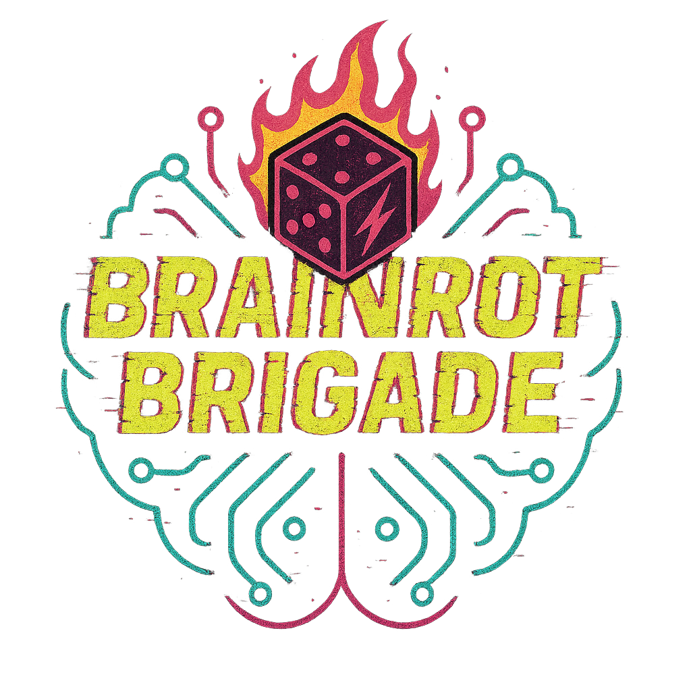

Somekone Social Media Lab
Somekone is an experiential media literacy project that turns
the mechanics of social media into something visible, testable
and discussable in the classroom. Designed for late KS2 and
early KS3, it places pupils inside a safe social media
simulation where they explore, react and gradually notice how
feeds shift over time in response to interaction. Instead of
beginning with warnings or technical explanations, learners
experience how clicks become data, how engagement drives
amplification, and how professionally presented content can
spread regardless of accuracy. Through structured discussion,
visual network maps and a hands-on "make your own engagement
bait" task, pupils build accurate mental models of how
recommender systems work without needing coding knowledge or
real platform access. The result is a low-risk, high-impact
unit that embeds AI literacy within media literacy, foregrounds
human choice and design, and equips young people with the
ability to recognise attention patterns wherever they encounter
them.
Brainrot Brigade

Brainrot Brigade is an experimental, narrative-driven TTRPG
designed to smuggle computational thinking into play. It is a
remix of the much-loved one-page RPG
Lasers and Feelings
,
inheriting its elegant, low-friction mechanics and single-number
decision-making, then extending them into short, punchy sci-fi
adventures built around puzzle-based encounters. Players earn
progress through choices, teamwork, and problem-solving rather
than stats alone, with each adventure feeding directly into a
Scratch-based, modular character sheet they actively build and
upgrade over time, adding dice rollers, inventory systems,
avatars, and new mechanics as they unlock digital "loot"
through play. The result is a tight loop of story -> unlock ->
build -> play, where creative coding and roleplay reinforce
each other, and learning happens because the game demands it,
not because it is labelled as such.
AI productivity and learning
In my current work, I’m poking at the question of how to get the best out of LLMs — in classrooms and in my own slightly overclocked workflow of productivity and tool-building. I’m not especially interested in becoming a prompt whisperer. I’m interested in posture: how we structure interaction so the human keeps their hands on the wheel, even when the machine sounds alarmingly confident.
The Centaur–Cyborg framing is my current lens. In Centaur mode, the model is a powerful but supervised instrument — fast, useful, and cheerfully fallible. In Cyborg mode, it’s woven more deeply into ideation and critique... but never granted authorship. In both cases, the real objective is interface literacy: learning to steer, interrogate, and sanity-check systems that generate fluent prose without guaranteed grounding.
Lately I’ve been experimenting with what I flippantly call friction-maxxing. Instead of smoothing everything into instant answers, I use Socratic prompting to push the cognitive load back onto the human. The model asks questions, surfaces assumptions, and refuses to be sycophantic. You don’t get polish until you’ve earned it, and you usually get far superior content.
The trick is simple: engineered friction produces better and more human-centric content, whatever the purpose. If we design AI interactions that demand articulation, constraint, and reflection, we preserve critical thinking — and build workflows that augment expertise rather than quietly replacing it.
TL:DR - I’m not trying to make AI more helpful, I’m trying to keep humans at the centre of the relationship with these newfangled tools.